|
 THE RISING SEA DRAGON IN ASIA - 2010 UPDATE By Jeff Head - Last Update: January 26, 2013 |
 |
              
(Click on any image for a larger picture) 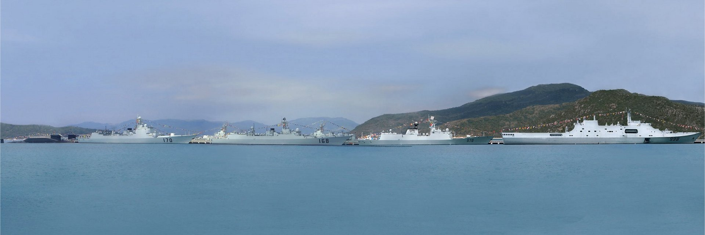 There have been numerous developments for the PLAN during 2009. One of the foremost was the very visible progress that is being made on the former Ukrainian aircraft carrier, Varyag, that the PLAN has been refurbishing since its arrival in Chinese waters in 2003. The vessel was moved from its long time mooring in Dalian to a new dry dock in early 2009. Soon thereafter, very visible work began on her, particularly centering on the island which has been rebuilt to allow for a new phased array radar fit and other sensors. In addition, a striking, full-sixed mockup of the entire deck and island has been built at the naval research facilities in Wuhan where obvious deck handling and logistics for deck and hanger deck operations are being developed and conducted. On the mockup deck, two mockup aircraft have also been observed. One is a Z8 helicopter which may well represent an AEW variant of that platform. During the year, an actual AEW variant of the Z8 has been observed undergoing flight tests. The other aircraft appears to be a strike fighter built along the lines of the more advanced Chinese J11 license built variant of the Russian SU-27 which may represent either a carrier variant of that aircraft, or an altogether new aircraft that has been rumored, the J15. These developments represent clear and major progress towards eventual launch of a PLAN aircraft carrier. We expect the Varyag to be launched in the 2011-2012 time frame, to be followed by one or two indegenous carriers built along the same lines in the 2015 to 2017 time frame. During the 2009 calendar year, the PLAN has also continued to produce more of the new, modern Type 054A frigate design. It has also become clear that more Type 093 SSNs and Type 094 SSBNs are being launched. All of the new vessels are undergoing vigorous sea trials and testing, and then training as they are commissioned into the various PLAN fleets. Of interest is also the numbers of PLAAF AEW, ELINT, refueling, and fighter/attack aircraft that are being built and put into service. To support their growing fleet, particularly out to the 2nd island chain and beyond, the PLAAF is significantly growing its numbers and capabiities of modern 4th generation aircraft.
Finally, the PLAN has conitnued its fleet operations along the Somalia coast and off the horn of Africa in anti-pirate operations with many other nations. By all accounts the PLAN vessels and crews are performing their mission very capably in this regard.
VARYAG MOVED TO NEW MOORING FOR DRY DOCK WORK & ISLAND RECONSTRUCTION
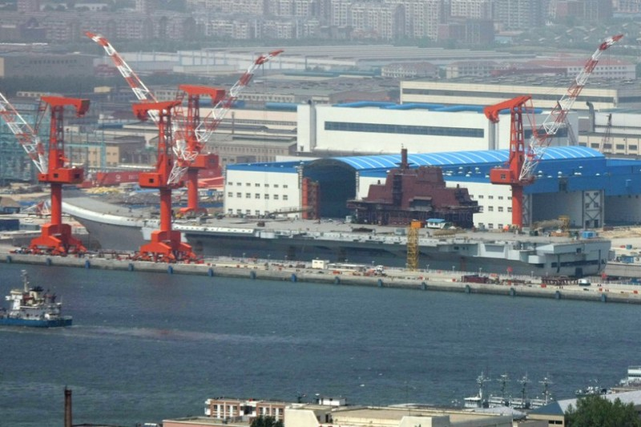 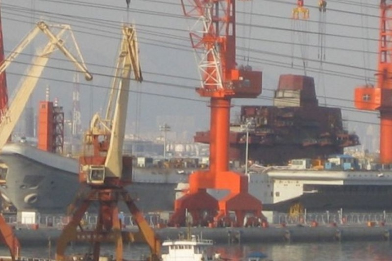 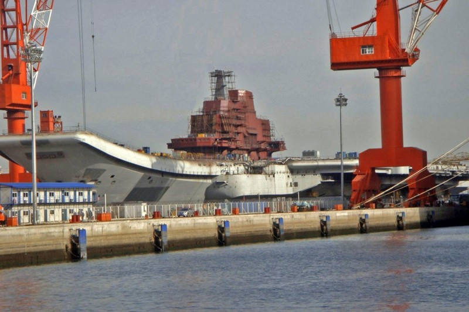 NEW FULL-SIZED VARYAG DECK AND ISLAND MOCKUP BUILT AT WUHAN NAVAL RESEARCH FACILITY
NEW AEW HELICOPTER (Z8) FOR CARRIER OPERATIONS FLIGHT TESTED
MORE GUIDED-MISSILE FRIGATES, DIESEL/ELECTRIC SUBS, NUCLEAR ATTACK SUBS & NUCLEAR BALLISTIC MISSILE SUBS
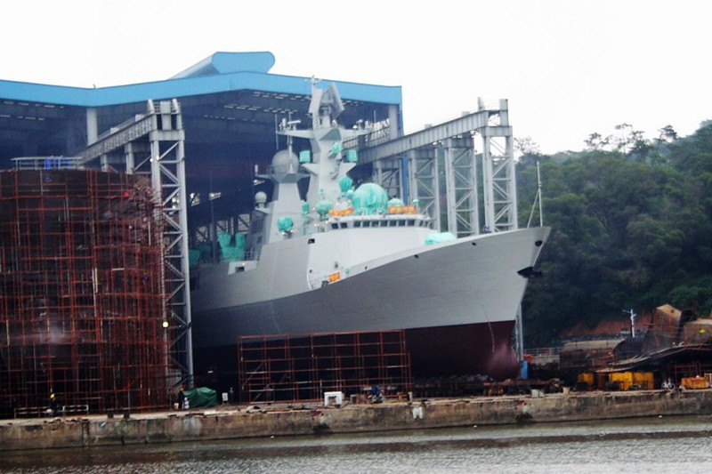 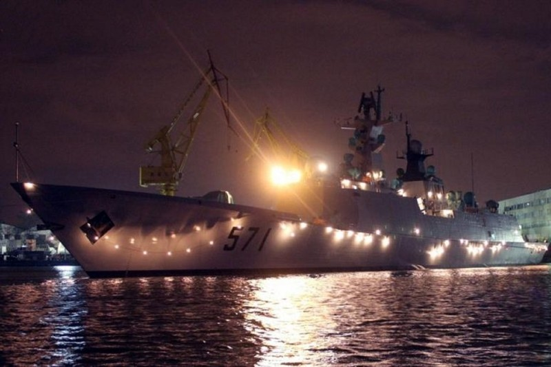 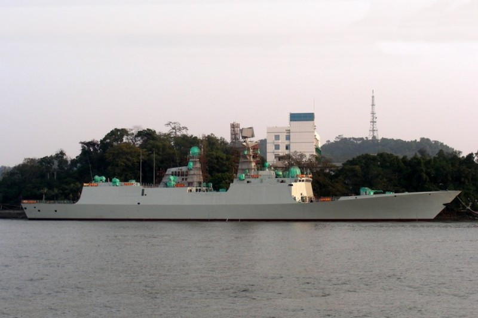 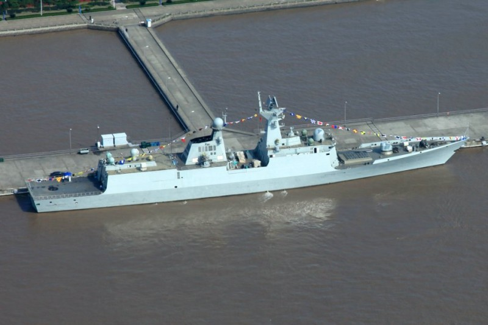
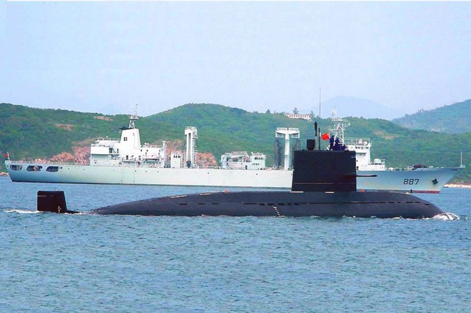 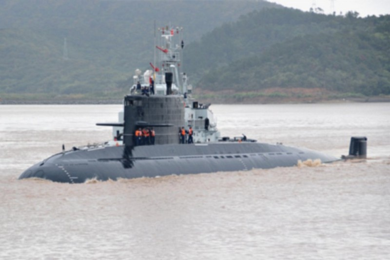
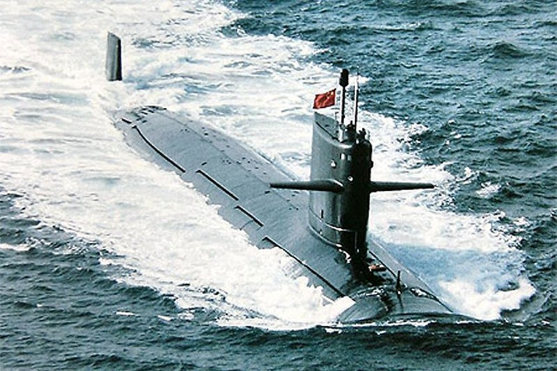 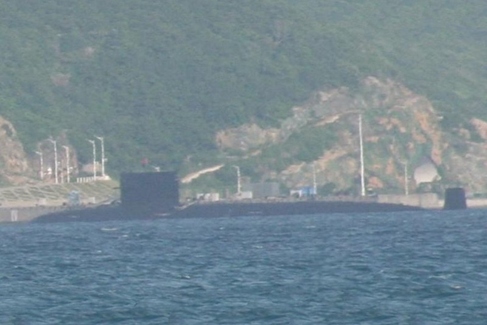 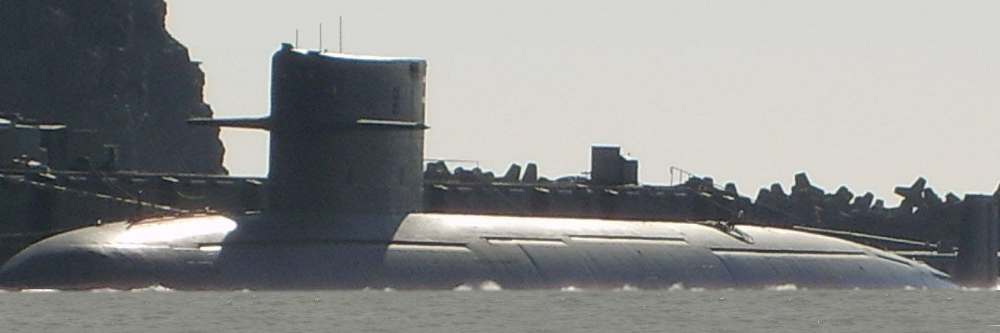
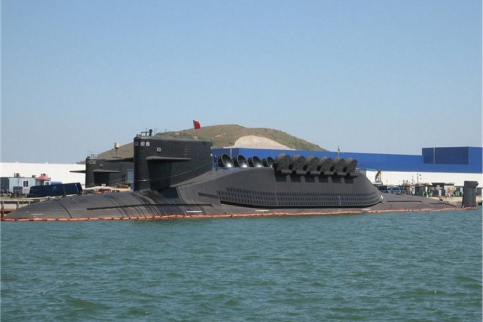 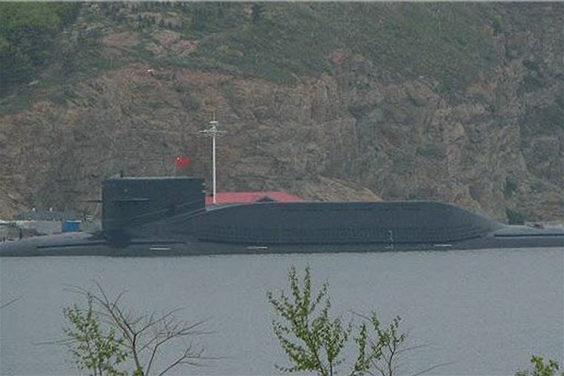 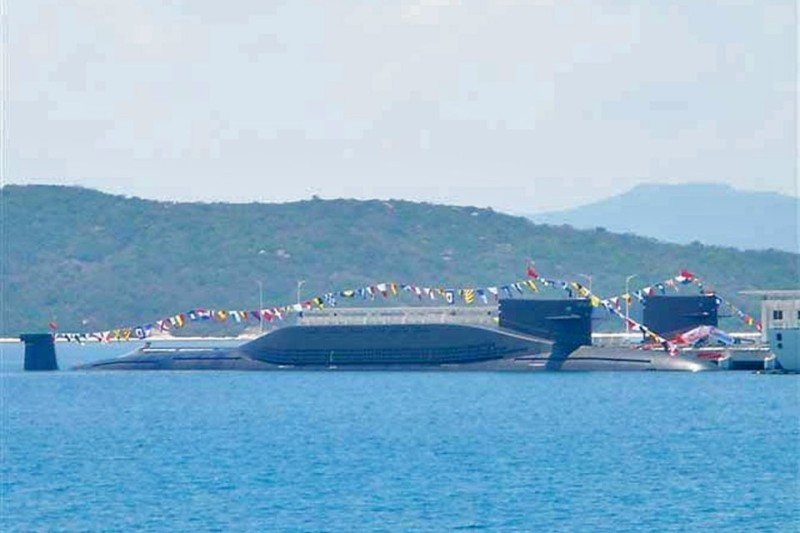
OPERATIONS WITH THE NEW LPD CONTINUE & A NEW LHD DESIGN REVEALED
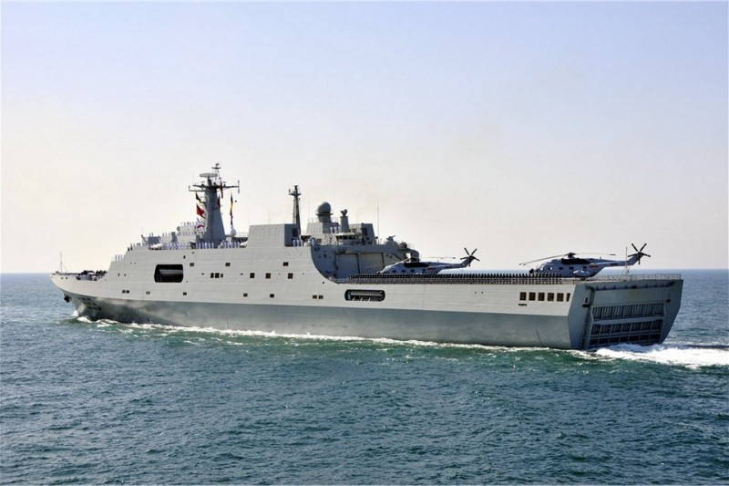 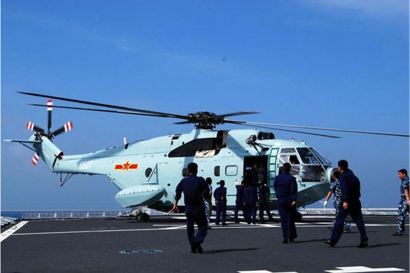 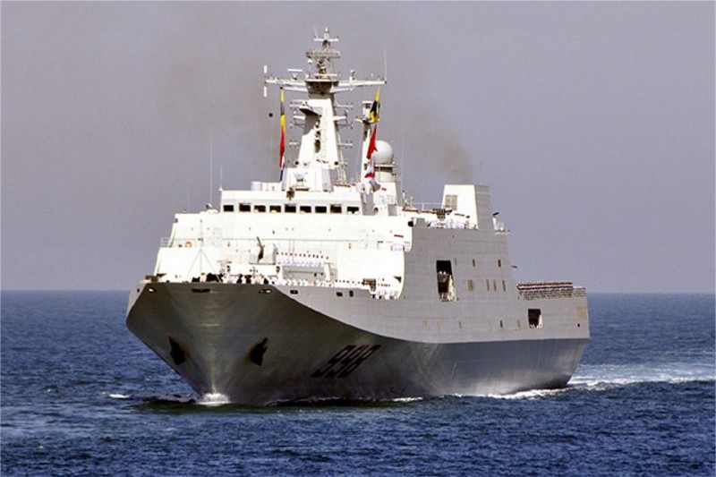 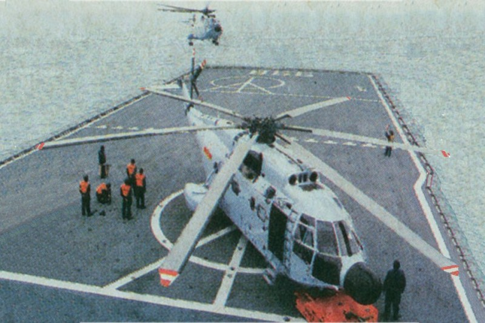 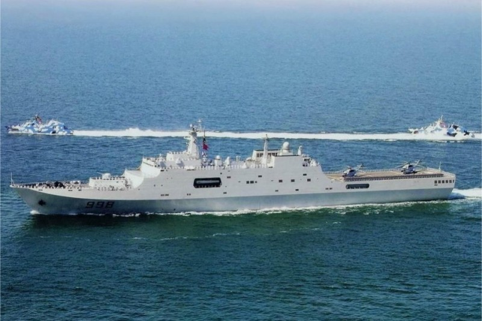
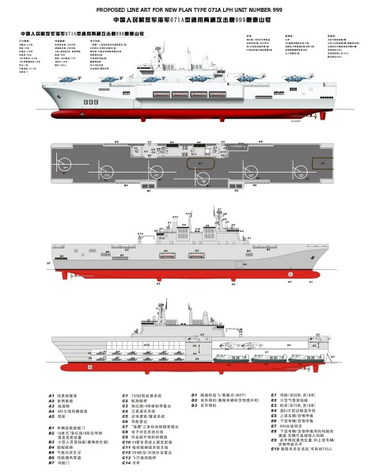
PLAN BUILDING MORE AND DEPLOYING TYPE 022 FAST ATTACH MISSILE CRAFT.
PLAN BUILDING MORE NEW ALCM CARRYING BADGER AIRCRAFT
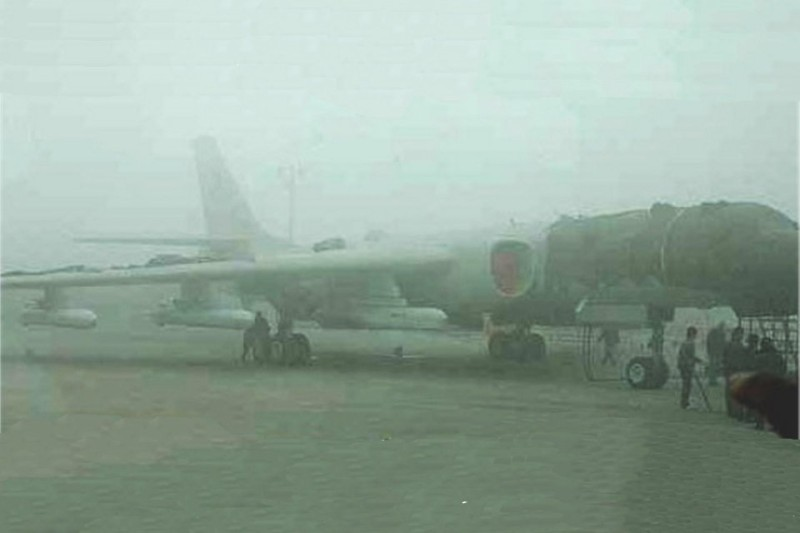
THE PEOPLE'S REPUBLIC CONTINUES TO GROW ITS OVERALL AWACS AND ELINT CAPABILITY
THE PEOPLE'S REPUBLIC CONTINUES TO GROW ITS OVERALL 4TH GENERATION FIGHTER & ATTACK AIRCRAFT
Clearly the overall trend shows that the PLAN is rapidly closing the gap between itself and the US Navy, and particualrly when focusing on the Western Pacific, which is where the PLAN is concentrated. This is a trend worthy of serious contemplation for future US Navy and other western nation's planning and acquisition schedules.
| ||


Copyright © 2005-2012 by Jeff Head
JEFFHEAD.COM Hit Counter
Jeff Head's Naval Sites Hit Counter
|